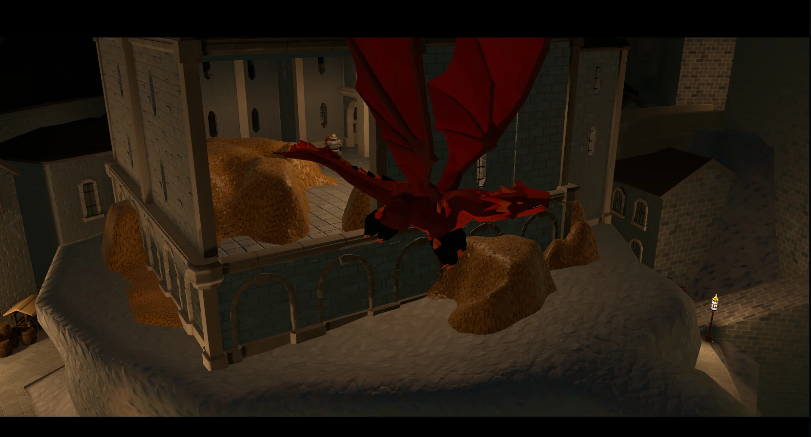
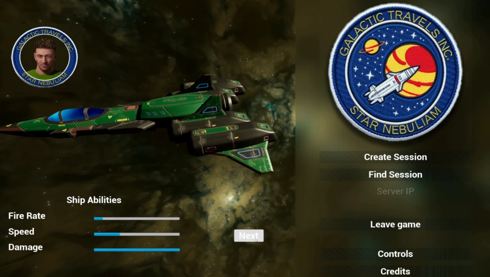
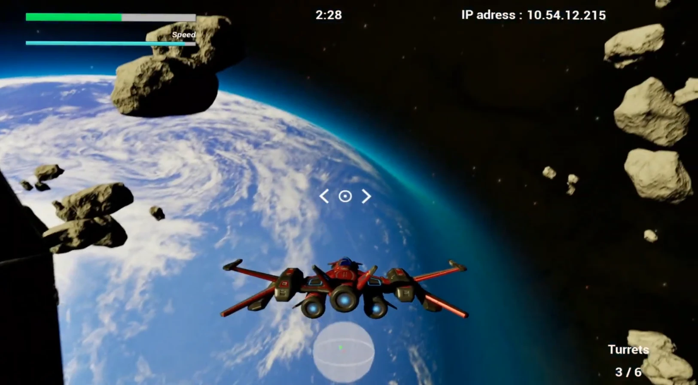
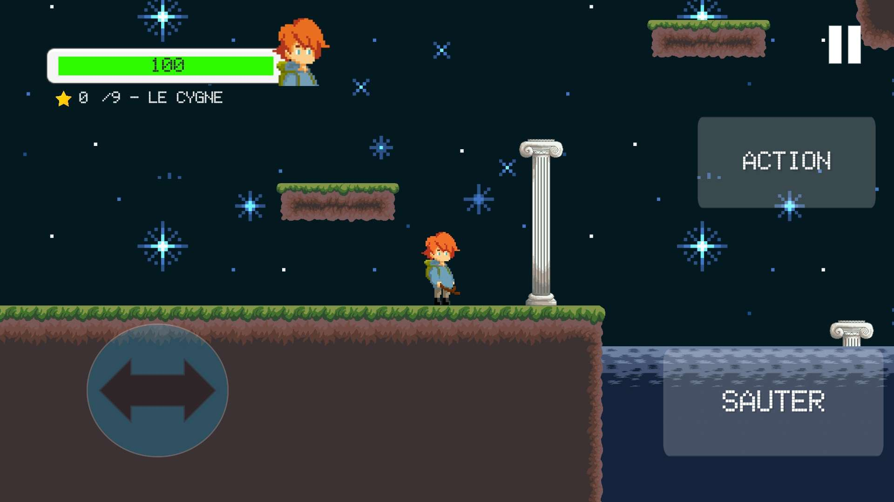
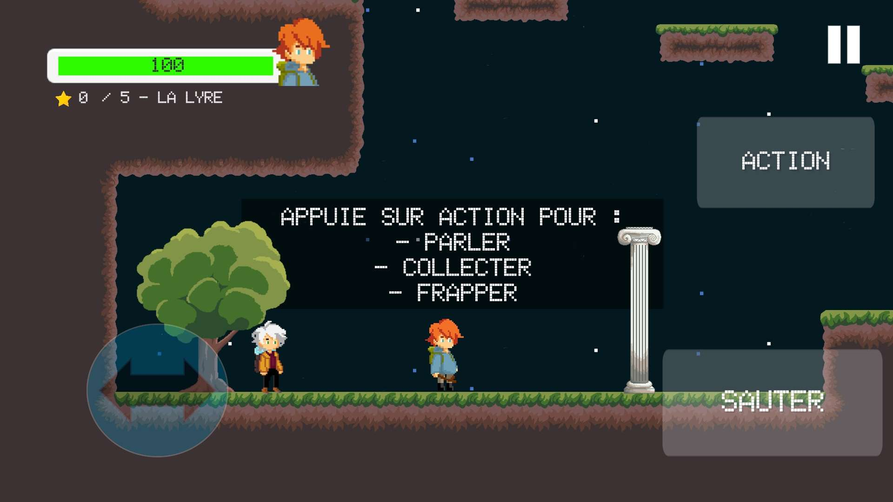
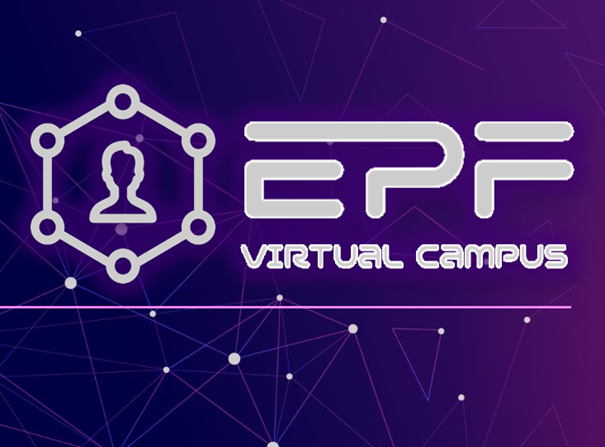
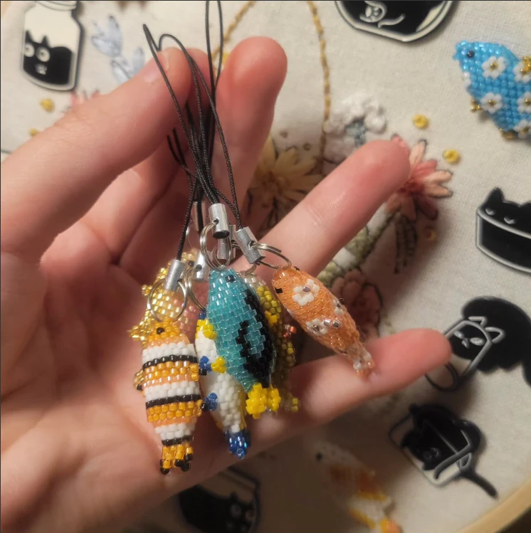

2026
Dragon Heist
Infiltrez-vous à 4 dans un château gardé par un dragon endormi, récupérez un maximum d'or et de trésors et fuyez avant le réveil du dragon.
 Voir sur Steam →
Voir sur Steam →




Ingénieure Unity & C#
Game developer en R&D chez Gameloft Paris. Je conçois des outils Unity, de la génération procédurale et des prototypes rapides, et je participe à des game jams dès que je peux.
Du plus récent au plus ancien. Clique sur une vidéo pour la lancer.
2026
Infiltrez-vous à 4 dans un château gardé par un dragon endormi, récupérez un maximum d'or et de trésors et fuyez avant le réveil du dragon.
Voir sur Steam →

2026
Le thème de la jam était « Masque ». On incarne un soldat de la Première Guerre mondiale qui doit récupérer des masques avant qu'une attaque au gaz moutarde n'atteigne sa tranchée.
Game Play · UI · Cinématiques
itch.io →2025
Incarnez une mouche qui a besoin de ses amies pour sortir de la pièce. Le thème de la jam était « One room ».
Game Play · Physique · QTE
itch.io →2025
Combat spatial multijoueur : chaque joueur choisit son vaisseau, puis part détruire les tourelles d'une station au milieu d'un champ d'astéroïdes.



2024
Vous jouez un corbeau piégé dans un cimetière, condamné à obéir aux dernières volontés des statues et des tombes.
2024
Un runner développé en C++ pendant le programme Develop@Ubisoft, accompagné par deux mentors d'Ubisoft Annecy.
Game Play · UI · Pooling
2023 – 2024
Jeu de bateaux multijoueur PvP et PvE, réalisé en deux mois. Les équipes s'affrontent sur une carte fermée peuplée de monstres et de trésors. Objectif : détruire le port ennemi.
Level Design · Game Play · UI
2023 – 2024
Jeu de gestion où l'on dirige un village dont les habitants et les dragons tentent de cohabiter : gestion du bonheur et des ressources, construction de bâtiments.
Game Design · Game Play · UI
itch.io →
2023 – 2024
Projet en réalité virtuelle pour rassurer les personnes qui souffrent de thalassophobie.
Game Play · UI · Level Design
itch.io →2023 – 2024
Hybride entre RPG et FPS.
Game Design · Game Play · Cheffe de projet
itch.io →2023
Petit jeu créé seule, offert en cadeau d'anniversaire.
2023
Un platformer mobile en pixel art où l'on retrouve les étoiles des constellations et leurs légendes grecques, avec un mini-jeu pour relier les étoiles.
Game Play · UI · Art · Cheffe de projet
itch.io →




2022
Initiative multijoueur qui recrée le campus de l'école pour accueillir les élèves en ligne pendant le Covid.
Cheffe de projet

Jeu individuel en C++, accompagné par deux mentors d'Ubisoft Annecy.
Prototypes Unity/C# : évaluation du ML et de l'IA générative, code modulaire et réutilisable.
Conception de jeux, moteurs de jeux, mathématiques et physique pour le jeu vidéo, jeux sérieux.

Génie logiciel, intelligence artificielle, virtualisation.
 Unity Confirmed (Unity Technologies)
Unity Confirmed (Unity Technologies)

Jeux vidéo : Baldur's Gate 3, Titanfall 2, Civilization 6 Dessin numérique sur Procreate
Dessin numérique sur ProcreateEnvie d'échanger sur un projet ou un poste ? Écris-moi sur LinkedIn.